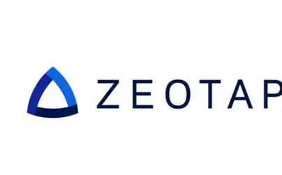
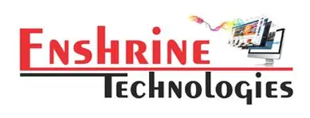
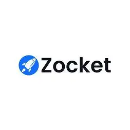

Zeotap – Retail Data Analysis & Customer Segmentation
This assignment involved analyzing an eCommerce Transactions Dataset from Zeotap, consisting of customer, product, and transaction data. Performed end-to-end analytics including EDA and K-Means-based Customer Segmentation to uncover behavioral insights and product trends.
- 📊 Conducted EDA on merged transaction, customer, and product datasets.
- 📈 Visualized monthly trends, top categories, and regional sales distribution.
- 🚀 Identified peak sales months: March & August; top categories: Electronics, Clothing.
- 🔍 Segmented customers into low, moderate, and high spenders using K-Means.
- 📐 Evaluated clusters using Silhouette Score: 0.59 and DB Index: 1.37.
- 🎯 Enabled targeted marketing strategies using behavioral clustering.

IIM Bangalore – Upfront Pricing Analysis
This project, part of an IIM Bangalore industry case study, investigates discrepancies between upfront fare estimates and actual ride costs in a ride-hailing service. Analyzed ride-level data to identify reasons for pricing deviation and propose actionable improvements.
- 📉 Built an end-to-end analysis pipeline using Python, Pandas, NumPy, Matplotlib, and Seaborn.
- 🚗 Found that 31.62% of rides had >20% deviation between upfront and actual price.
- 📌 Identified key factors: poor GPS confidence, route/destination changes, and long trip durations.
- 📊 Used correlation matrices and visuals to isolate deviation root causes.
- ⚙️ Suggested solutions: real-time GPS tracking, ML-based pricing prediction, and route sensitivity adjustments.
IAI Solutions – Invoice Reimbursement System (RAG-based Chatbot)
Developed a full-stack RAG-powered chatbot to analyze invoices against policy documents and answer reimbursement queries using LLMs, ChromaDB, and FastAPI. Integrated semantic search, parallel processing, and conversational intelligence for accurate policy compliance insights.
- 📄 Parsed policy and invoice PDFs using PyMuPDF, analyzed invoice-policy alignment via Gemini Flash.
- ⚡ Accelerated batch processing using threading for handling multiple invoices.
- 🔎 Embedded invoice content via SentenceTransformers & stored in ChromaDB for semantic search.
- 🤖 Built a local RAG pipeline using Flan-T5 and Mistral 7B to generate context-aware answers.
- 🛰️ Deployed APIs using FastAPI and exposed them via pyngrok for real-time testing.
- ✅ Example: “Why was Rahul's cab reimbursement partially rejected?” → Contextual response: It exceeded ₹600 policy limit (submitted: ₹1200).

Enshrine Technologies – Multi-Agent AI System using Google ADK
Developed a multi-agent AI system that interprets natural language goals and executes chained tasks using Google ADK, FastAPI, and external APIs. Designed intelligent agents for planning, retrieval, evaluation, and summarization of real-world objectives.
- 🧠 Built Planner Agent to parse user goals and generate stepwise execution plans.
- 🔍 Developed Retrieval Agent using CoinGecko, SpaceX, and NewsAPI to fetch real-time data.
- ⛅ Integrated Weather Agent to pull forecasts via OpenWeatherMap.
- 📝 Implemented Evaluation Agent to assess risks (e.g., delays) and summarize outcomes.
- 📡 Exposed FastAPI endpoints via Ngrok for seamless deployment on Google Colab.
- ✅ Example: “Get SpaceX launch details and weather” → Output includes launch site, date, and risk analysis.

Zocket – RAG Agent for Marketing Query Research
Built a lightweight RAG-based AI agent to assist marketing teams by answering campaign-related queries using marketing blog data. Exposed as a FastAPI REST endpoint for seamless Zocket integration.
- 🧠 Used SentenceTransformers for semantic embedding of queries and blog chunks.
- 📚 Retrieved context using ChromaDB (PersistentClient) with metadata filtering.
- 🗣️ Generated actionable responses using TinyLLaMA-1.1B-Chat-v1.0 for fast, coherent output.
- 🚀 Deployed API via FastAPI and securely exposed using Ngrok on Colab.
- ⚙️ Overcame VRAM issues, ChromaDB deprecations, and unstable endpoints via optimized configuration.
- ✅ Example: “How can I increase engagement for video ads on Instagram?” → Structured, insightful answer generated using blog knowledge.
Zeru Assignment – Aave Credit Scoring System
Developed a credit scoring framework for Aave V2 users by analyzing 100K DeFi wallet transaction records. Implemented both rule-based scoring and unsupervised ML clustering to assess wallet reliability.
- 📊 Engineered wallet-level features like transaction types, USD volumes, activity ratios, and liquidation history using Pandas and NumPy.
- 🤖 Applied KMeans clustering on normalized features to assign credit scores between 200–1000.
- 🧠 Captured user behavior patterns like borrowing frequency, repayment behavior, and protocol usage diversity.
- 📁 Exported final scoring results as CSV and provided interpretability via visual summaries.
- 🔮 Suggested future improvements including anomaly detection, real-time scoring APIs, and on-chain dashboard integration.
- ✅ Example: Wallet with consistent repayments, no liquidations, and diverse protocol use → high credit score (900+).
Zeru – Wallet Risk Scoring From Scratch (Compound V2)
Built a rule-based DeFi wallet risk scoring system by analyzing borrow and repay behavior on the Compound V2 protocol. Assigned wallet-level scores (0–1000) based on on-chain activity and repayment discipline using data fetched from Covalent API.
- 🧾 Loaded 100 Ethereum wallet addresses from Excel and fetched Compound V2 events (borrow, repay) via Covalent API.
- 🔍 Engineered features like net borrow, repay ratio, transaction frequency, and activity span using pandas.
- 📊 Scaled features using MinMax and computed a rule-based risk score rewarding repayment and penalizing high debt.
- 📁 Generated wallet_risk_scores.csv with normalized scores for DeFi credit risk assessment.
- ⚙️ Modular pipeline includes Excel import, Covalent data pull, feature generation, scoring, and result export.
- ✅ Example: Wallets with high borrowing, missed repayments, and recent concentrated activity → higher risk scores (~800–1000).
ABC Gaming Loyalty Analytics – Vindiata Consulting Pvt. Ltd.
Built a loyalty analytics engine to evaluate player performance on the ABC Gaming platform using a custom point-based system. Analyzed slot-wise and monthly trends, ranked users, and distributed performance-based bonuses from a ₹50,000 pool.
- 📊 Applied a weighted formula using deposits, withdrawals, and gameplay for loyalty calculation.
- 🏆 Generated leaderboards for different time slots and the full month of October.
- 💸 Designed a proportional bonus allocation algorithm for the top 50 players based on loyalty points.
- 🧠 Proposed formula improvements (e.g., reduce deposit bias, introduce gameplay multipliers, add loyalty tiers).
- 📈 Delivered actionable insights on user engagement, deposit behavior, and game activity trends.
- ✅ Example: User 634 scored over 61,000 loyalty points and received the highest bonus share (~₹7240).